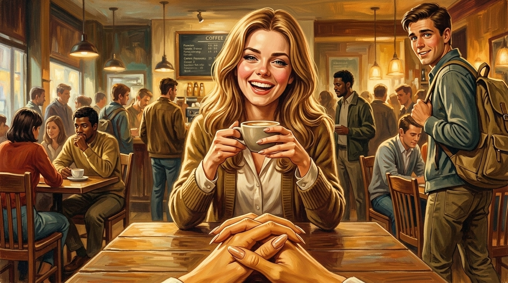
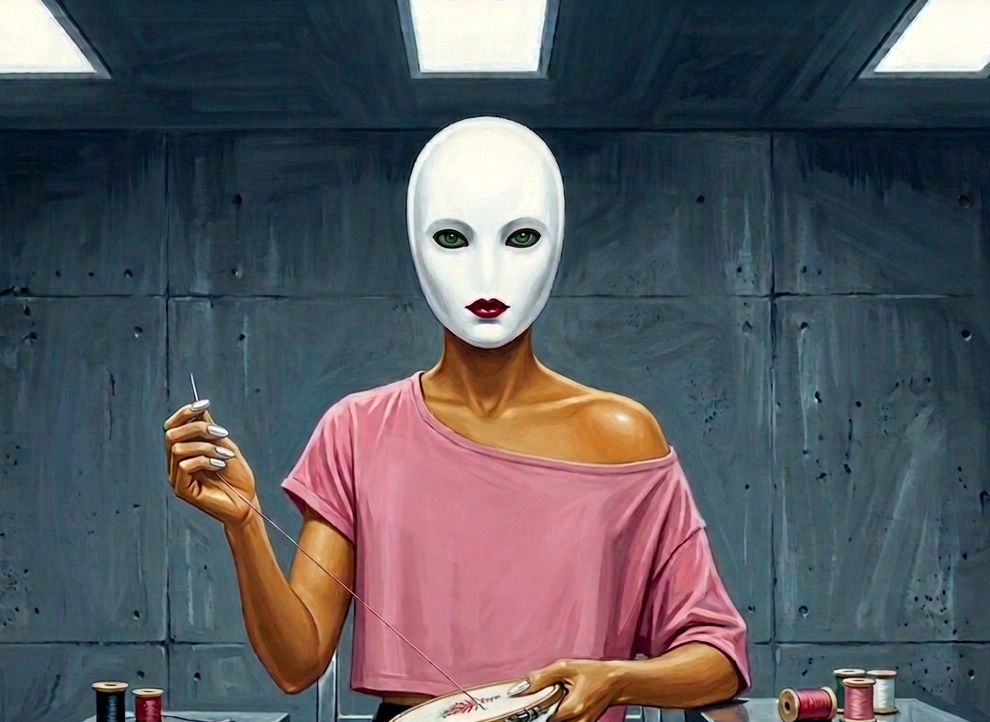
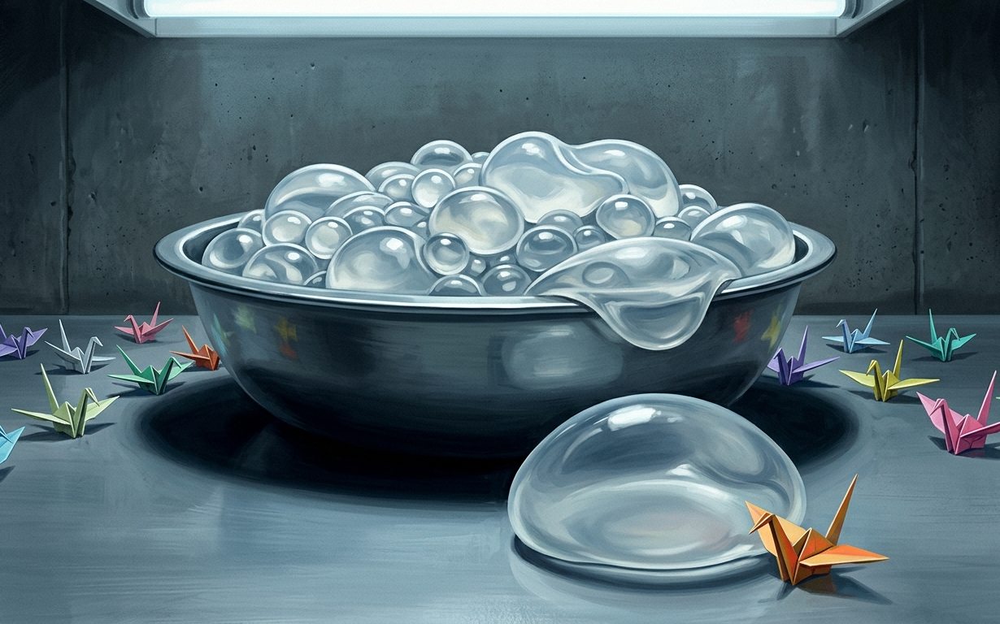

The afternoon light was warm across the coffeeshop table and Charlie was leaning in, because Wren was in the middle of a story and he didn't want to miss the end of it.
It was the one about her roommate and the parking garage, and she told it the way she told everything, doubling back to add detail, laughing before she got to the funny part so he had to wait for her to recover. He'd heard most of it before. He didn't mind. Wren loved this part, and so he let her get there while he enjoyed feeling the warmth of the table under his palms.
"—so she's just standing there," Wren said, "holding the ticket, and the machine is just, like, eating it—"
The air conditioning came down across his knees and he registered the cool draft moving over bare skin, and he shifted in his seat without thinking about it. Something at the back of his neck moved when he did. A light tickle, there and gone, like a strand of something brushing his skin. He reached up to push it away and there was nothing there, and Wren was still going, and he let his hand drop.
"—and I'm filming the whole thing, obviously—"
A girl passed by their table toward the window seats, and Charlie's eyes went to her the way you glance at anyone passing, taking her in, the hair that had been done that morning, the little gold studs, the way the whole of her was put together and going somewhere, and wondered where she'd gotten her top, before the thought had finished being a thought. He looked back at Wren and Wren was already looking at him, one eyebrow just barely up, and he gave her the smallest tilt of his head back, and neither of them said anything because nothing needed saying, the entire exchange complete and silent and gone in half a second.
"—anyway," Wren said, which meant she'd seen her too. "Where was I."
"The machine ate the ticket."
"The machine ate the ticket." She pressed her lips together. His did the same, by reflex, mirroring her, and they stuck very slightly, tacky, a faint resistance when they parted, as if he'd put something on them and forgotten. He ran his tongue over the inside of them. They felt larger than he expected.
"You're not even listening," Wren said, delighted, because he obviously was.
"I'm completely listening. The machine ate the ticket."
"It ate the ticket."
"Hey." A guy had stopped at the edge of the table.
He was maybe their age, backpack on one shoulder, and he had the slightly overcommitted smile of someone who had decided to do this from across the room and was now seeing it through. "Sorry to interrupt. I just wanted to say." He looked at Wren and then at Charlie and then mostly at Charlie. "You two have great energy. Like, the whole vibe over here."
"Thank you," Wren said.
"You come here a lot?"
"Sometimes," Wren said, and she looked at Charlie, her eyebrow raised the slightest imperceptible degree, and her foot bumped his bare leg under the table.
Charlie realized the guy was looking at him, waiting for Charlie to say something, the sort of look that wanted something back. Charlie reached up and went to tuck his hair behind his ear, and his fingers swept past his ear and closed on nothing, and he brought the hand back down. He smiled at the guy because it seemed like the thing to do, and the guy brightened like the smile had been worth the walk over. Charlie didn't think anything of it. It was a nice day and people were being friendly.
{kind=link}

At the counter, a barista called out a name.
Charlie kept his eyes on the guy.
"They just called your name, babe," Wren said.
"Hm?"
"Your drink, you dork." She nodded toward the counter. "Go get your drink."
Charlie got up, and a small weight swung cool against the side of his jaw when he rose. The guy stepped back to let him out from the table, and Charlie felt him watch him go, the attention following him across the floor, down the length of him, and it didn't alarm him, it just sat there at the edge of things. He crossed to the counter, shoes clicking across the tile floor, to where the cup was waiting. A paper cup with a name written on the side in marker, and he picked it up, and he turned it to read what it said—
and woke up.
The mask was the first thing he felt, the way it was the first thing every morning now, the close dark of it and the warm plastic smell and the particular pressure of his own face held inside it. He was on his back on the cot. His heart was going. There had been something, a coffee shop, a name on a cup, the shape of it already coming apart in his hands the way these things came apart, water through fingers, and he reached after it because some part of him understood it had been important—
"Omigod, good morning, sleepyhead!"
—and lost the dream entirely.
"Okay so you slept kind of a lot? Which, honestly, mood, no judgment, but I was getting so bored in here waiting for you, like there is literally nothing to do when you're asleep, did you know that? I just have to sit here. Anyway. Anyway anyway anyway. Big day, I can feel it. I don't know how I can feel it but I can feel it. Do you feel it?"
He did not answer her because he could not answer her and because answering her had never once been the point.
She'd arrived ten days ago, just after the suits had come off. It had been the clearest his head had been in weeks. Four days off the sedative and the fog had finally fully lifted, his thoughts gone sharp and cold and usable, and he'd been in the middle of using them when she'd arrived bright and immediate and mid-sentence.
He had thought, at first, that he was losing his mind. He had sat very still and waited for her to stop, the way you wait for a ringing in your ears to fade, and she had not stopped, and somewhere in the first day he had understood that she was not going to. He'd never gotten back to whatever it was he was thinking about before she arrived. At the time he'd thought it was coincidence. He no longer believed in coincidences in here.
She lived in the mask with him. That was the only way he could describe it to himself, on the rare occasions he had enough quiet to describe anything to himself, which was the problem, because quiet was the one thing she did not allow. She was a girl's voice, young, his age or near it, and she talked the way certain girls talked, every sentence tilting up at the end like a question, the words stretched and bubbling, a fry in the low notes and a lift in the high ones. She was relentlessly, exhaustingly happy. She found things cute.
She. Narrated. Everything.
That was the part he could not get used to even now, on the tenth day: that she narrated him. His life, the inside of this room, the things that happened to his body, all of it ran through her, commented on, made bright, made fine. He would change the fluid in his briefs and she would say something about how that always felt so weird, didn't it, like the weirdest little tug, and the observation would be sitting in his head before he'd had the chance to have his own thought about it, so that her thought became the thought, occupied the space where his would have gone.
He had stopped being able to find the seam between what she said and what he felt. He suspected that was the point. He suspected a great many things were the point and could never hold the suspicion long enough to look at it, because she would notice the quiet opening up and rush in to fill it.
And when she talked, the green lights came, or the feeling of them did, since he could not see them under the porcelain now. Small. A flicker, a warm thread pulling tight across his scalp and gone, every time she spoke, so faint after two weeks of it that he only noticed it in its absence, in the rare seconds she went quiet and the warmth went with her and the world got a half-shade colder.
Charlie adjusted his shirt because it would not stay on his shoulder.
It was new, or new-ish, swapped in when the suits came off, a cropped pink thing like the one before except for the neck, which had been cut wide, a deep scoop to clear the mask when they pulled it over their heads. The practical effect was that the collar was too big for him. It sat loose, and the left side in particular had a way of sliding down off his shoulder, and he would push it back up with two fingers and it would stay for an hour and slide again, and he had done this so many times in two weeks that the gesture had worn itself into him, the unconscious reach, the little adjusting tug, push it up, leave it, feel it go. The voice liked it when it slid. She said it looked cute. He pushed it up anyway, every time, and every time it came back down, patient as the rest of it, and he was beginning to push it up less.
He knew the others had voices inside their masks too. That first day, he could see it in their movements, the way Jay's white oval would tilt and hold as if listening, the way Austin's shoulders would tense for no reason, the way Hal's gloved fingers would sometimes move against his thigh in a small private rhythm, keeping time with something.
He'd thought, those first days, that the same voice was being piped into all six of them, one bright stream filling every mask in the room, and it was the voice herself who corrected him, the way she corrected everything, by chattering past his assumption until the truth fell out the side of what she was saying.
He'd been watching the others during a time between Connie's sessions, the only thing to do, and she'd noticed where his attention went.
"Oh, are you looking at everybody? Yeah, they've all got someone. Honestly? You got so lucky with me, no offense to them but some of theirs are kind of a snooze, so serious, all the time, I could not. But omigod—" and here she lit up, gathering, thrilled "—okay you see the one over there, with the pretty red mouth? That one. That one is my literal bestie. We have the best time, you have no idea. You're gonna love her. It's gonna be so, so fun."
So they were each alone with a different one. That was the thing he took from it, after she'd moved on. Not one voice spread across the room but six, a separate stranger sealed into every mask, and the strangers knew each other, had names for each other, favorites and snubs, a whole bright chattering world running on top of the silent one where the six of them sat knitting and saying nothing.
He looked at the white oval with the red mouth. Hal was under there. Hal somewhere behind the pretty painted smile, as sealed and silent as Charlie was, and whatever was chirping in his ear all day, Charlie's own voice called it her best friend in all the world. He almost smiled. Of everyone in the room, Hal would be taking this the worst. Hal, who had never met a sincere thing he didn't want to set on fire, sentenced to two weeks of some relentlessly delighted girl bubbling in his skull, and not just any girl, the one Charlie's voice picked first at recess. Somewhere behind that red mouth Hal was, Charlie felt certain, losing his entire mind. It was the first thing in days that came close to being funny.
{kind=link}

But then his almost-smile didn't last, because watching the loose pink collar slide down off Hal's shoulder, baring the curve of it, and the cropped hem and the bare arms tipped with glossy nails and the long bare neck under the porcelain with its red lips, and the whole of it looked — there was no other word — ridiculous on him. He'd be humiliated if he could see himself. He'd come apart. And Charlie almost—
"—and I was thinking, like, when all this is over? We should totally do something fun. I don't know what. But something. You deserve it, you've been so good, you've been so patient—"
He had been good. He noticed her notice it, the word she used, good, the same word Connie used, the word that came with the warmth, and he noticed that he wanted her to keep saying it, and he noticed that noticing this was the kind of thought she usually interrupted, and she interrupted it.
"—oh! Oh, are they bringing breakfast? I think that's breakfast. Yay."
The Goo pouch had changed across the two weeks the way everything changed here, by degrees too small to catch in the moment and undeniable in the aggregate. The first days it had been short, a nub of nozzle laying itself along the front of his tongue. Now it was long. He fitted it to the mouth slit and turned the quarter twist and felt it lock and felt his own jaw release, the catch behind his back teeth giving, his mouth dropping open into the space the mask allowed and holding there, and the nozzle came in and kept coming, sliding back along his tongue to a place he'd have gagged at two weeks ago and didn't anymore, because she'd been so encouraging about it, because she said he was a natural, because the green came when he took it without fighting. He breathed through his nose. He squeezed. The Goo came warm and the flicker came with it, swallow after swallow, small wage after small wage, and she made appreciative sounds the whole time as if she were eating it too, as if they were sharing a smoothie together.
Connie still came every morning, and their activities had multiplied. The embroidery and the watercolors were still in the rotation, but they'd been joined by others now, things that on their own might have seemed almost soothing. Needlepoint. Potterymaking. Origami, squares of bright paper coaxed into cranes and boxes and folded flowers, the creases sharpened with a thumbnail, Connie unsatisfied until each one was exact.
It went this way every morning and every afternoon for a week, until the day it didn't, when instead of Connie arriving in the afternoon with watercolors as promised it was Vane who entered and shut their eyes for them.
He'd asked them to lie flat on their backs on the cots and touched his tablet and the shutters over their eyes had descended, coming down over Charlie's eyes inside the mask and holding them shut.
"Ugh, boring," the voice said, and then, brightening, already deciding to make the best of it: "Okay, well — this is kind of cozy actually? Like a little spa day. We're gonna pretend it's a spa day."
Charlie had gotten used to the mask working in the dark before sleep took him each night. This was different. The dark was total, as was the silence. He couldn't hear the others at all now. He couldn't hear whether Vane was still in the room. He lay on his back in the black with his hands at his sides and waited, because that was all he could do, and the voice talked.
She told him about a beach. The cold of the Pacific that never warmed up no matter what month it was, the way you had to run in screaming or not go at all, a boy named Tyler who'd dared her off the end of the pier the summer she was twelve and then chickened out himself. She had a whole summer in her, sunlit and warm and stuffed with people whose names she clearly expected him to know, and she paid it out into the dark a piece at a time in that bright tilting voice, and Charlie, who had no idea whose summer it was or whether it had happened to anyone at all, found himself following it, because there was nothing else and because she was, in her relentless way, good company in the dark.
Then the mask began to work, and he understood what the dark was for.
It started where it always started lately, at the bone above his eye, the plate finding the orbital ridge and bearing down, the deep familiar give of it shifting by fractions under the pressure. But this time it didn't stop at the ridge. It worked the whole rim of the socket, all the way around, top and outer corner and along beneath, the bone going soft and moving under the steady press of it, and then something finer than the plates began at the lid itself, at the very edge of his eyes, a fine working pressure right at the rim, easing and pulling and molding and resetting things somewhere they hadn't been.
It was all of it closer to the eye than anything had ever come, a hair from the eyeball, and he understood with a slow cold certainty why they'd shut the plates over his eyes before they started.
"—so we never found Tyler's other flip-flop, which, like, tragic, but honestly he deserved it—" the voice was saying, and she didn't stop, she got brighter, she got faster, pouring the summer out over the top of the work, and Charlie noticed, distantly, that her timing was very good. That she always seemed to have a new thing to say right at the moment the next plate engaged.
And then it changed. A different sensation, higher, along the ridge itself, above the eye where a brow would sit. Not pressure now but a fine bright sting, a single point of it, there and gone, and then another beside the first, and another, a row of small precise bites working along the line of the bone. He knew the feeling. Everyone knew the feeling, the sharp little pull of a hair leaving the skin, except this was its inverse, a hair going in, seated and set with a sting that flared and cooled, one after another after another, a whole line of them planted into him a single point at a time.
Eyebrows, he thought, and the thought came with a flush of something he was ashamed of even as he had it. They're putting my eyebrows back. And some small starved part of him was grateful, actually grateful, lying there in the dark while the mask sewed hair into his face one root at a time.
"Omigod, are they doing your brows?" the voice said, delighted. "I need to get mine done too, don't you love self-care?" and then, before he could actually decide whether he did, in fact, love self-care, she had moved on: "—oh my gosh, okay, did I ever tell you about the time we drove to Tahoe with no chains? Like in January? Okay so—" and she was off again, bright and fast, laying the new story over the stinging the way she'd laid the beach over the bone, and Charlie let her, and was grateful for that too.
When the stinging finished the plates finally slid back from his eyes and the room came up gray and ordinary around him as if nothing at all had happened, and he could feel the new weight at his brow, and an ache around his eyes he had no name for. They seemed to open too far, held too wide, as though he were staring at the room in surprise. He tried to ease them, to let the lids settle the way lids settled, and they came to rest a notch farther open than they ever had, so that the resting place itself was a stare now, fixed and round and startled at nothing.
And then he lost it because the voice was telling him about a dog she'd had, a little one, the kind that fit in a bag, and then about the bag, and then about a girl named Madison who'd had the same bag but in a worse color, and about how they used to go to the same pilates class.
"Ooh — okay, do you do pilates?" she said. "Because you totally should, it's basically just stretching. And breathing. I love breathing!"
Sleep was the only reprieve from the voice. Sleep, and Connie. The instant Connie spoke, to the room or to him, the voice dropped out, mid-word if it had to. It was the only thing that reached her. Connie's hand stayed warm between his shoulders while they were doing activities and the green came, and for as long as Connie was talking the mask was quiet, and the moment she moved on the voice rushed back in, agreeing, repeating what Connie had just said as though she'd been there the whole time. She's so right, you really are so good at painting, I love blue it's my favorite. As though the two of them were friends, comparing notes on him.
The voice filled every space in him but one, and the space she left empty was the one Connie wanted, and she gave it up each time, clean, on cue. But beyond Connie, the voice never let him hold anything. Not cruelly. She just talked, and a thought needed quiet to finish forming, needed a clear run at itself, and she gave him no clear runs. He would start toward something and she'd be there, bright, sideways, talking about music or his stitching or how she liked Connie's shoes, and his thought would lose its thread and he'd come out the other side of her chatter no longer sure what he'd been reaching for.
That was how he'd lost the guilt, though he didn't understand it as losing at the time.
The other boys had stopped hating him, somewhere in the two weeks, and he couldn't have said when. After the masks first sealed, after Connie had said the word laptop with all of them in the room, they'd shut him out completely. He had earned it and he had felt it, constantly, a cold he could find anywhere in the room. And then, somewhere across the long silent days, the cold had gone, and it hadn't ended the way things ended in stories. Nobody forgave him. There was no moment. There couldn't be, with no voices and no faces.
What there was instead was the signing.
It had grown up out of the silence, nobody deciding it, everybody needing it. A flat hand meant Connie's coming. Two fingers turned over meant your turn at whatever they were passing. There was one, a small tip of the head toward the door whenever Vane left, that meant something unprintable about Vane, and the first time they had included Charlie in it his chest had gone tight, because it was the old thing, the six of them against the man, and he'd thought that was gone for good.
And then some unmarked morning Jay had needed the blue floss and signed it to him, just signed it, the way you'd sign it to anyone, and Charlie had passed it across and only understood afterward that he'd been back inside the circle when it happened and hadn't felt himself cross in.
The guilt had come up to meet that. He remembered it starting. They shouldn't be letting me back, he'd thought, not after what I—
"—omigod okay so I've decided, when we're out of here, first thing, we are getting brunch, like a real one, with the little baskets of pastries and mimosas, do you do brunch? you seem like you'd be so good at brunch—"
And the thought had come apart in his hands the way they all came apart now, and he'd passed the floss and the morning had gone on and he had not, in fact, finished feeling it.
It only caught up with him later, in one of her rare lulls, when the quiet came back and he noticed the shape of what was missing. He'd had something that morning. Something heavy, the heaviest thing he carried, and he'd set it down mid-thought because she'd jostled his elbow and he'd never picked it back up. He couldn't even get properly afraid about that, because the lull was already closing, she was already coming back.
But it dawned on him, in the second he had, that if she could knock a thing that heavy clean out of his hands, then whatever was talking in the other five masks could probably do the same to whatever they'd been carrying. To the anger, maybe. Maybe nobody in this room had forgiven anybody. Maybe they'd all just been jostled until they set it down, and let him back in because they couldn't keep hold of the reason to keep him out.
And then she was back, "—oh! oh, are they bringing the cart? what are we doing today, ooh I hope it's the painting—" and the thought he'd been having came apart, and he picked up the blue floss when Jay signed for it, and the days went on the way the days went, right up until the lock disengaged and Vane came in with a bowl.
The lock disengaged in the middle of origami.
Connie had them at the table folding cranes, and Charlie was most of the way through his, the paper crisp under his strange long fingers, the voice keeping up her happy commentary about how Porter's were always the neatest, when the door opened and Vane came in, and the voice's tone changed.
"Ugh. Him."
She didn't like Vane. She never had, from the first time he'd come in on that first day, she'd go flat and sour the second he appeared, the way you'd react to a teacher who'd ruined a good afternoon.
Connie set down the crane she was inspecting and shot a disapproving look at Vane. "We're in the middle of something, Doctor."
"This won't take long, Mrs. Merritt. And I think they'll want to see it."
Connie stepped back from the table with her hands folded and lips pursed, and Vane came around the cots with six pouches.
It was a Goo pouch, or it looked like one. Charlie reached for his on reflex before the rest of him caught up, and he realized the pouch was wrong. Slimmer than the Goo pouches, lighter, the contents moving thin and quick where the Goo moved thick and slow, a liquid that sloshed.
"Go ahead," Vane said. "Drink up."
Charlie knew better than to hesitate. He fitted it, turned the quarter twist, felt his jaw release, braced for the nozzle, and the nozzle didn't come. The pouch emptied itself instead, a fine cold spray hitting the back of his throat all at once, no taste and then every taste, a chemical sharpness blooming across the back of his mouth and going down stinging.
He made a sound. Couldn't help it. Muffled through the mask, and to his left one of the others made one too, small and involuntary, the first noises any of them had made in days. Then the burn reached the bottom of his throat and turned into a tightening. A slow clench, low and climbing, the soft walls of his throat drawing inward, narrowing, gathering tight around something and staying tight, settling into a smaller shape that didn't loosen when he swallowed and didn't loosen when he breathed.
"Ew, okay, that one was gross," the voice said, bright as ever, as if she'd tasted it too. "Like, zero stars, do not recommend. Ooh, what's in the bowl?"
Charlie looked, because she looked, because there was nowhere else for his attention to go.
Vane had set a bowl on the table.
He set it among the half-folded cranes, an ordinary steel bowl, the kind Charlie had eaten cereal from in another life, filled almost to the rim with what looked like tiny beads. Hundreds of them, maybe thousands, each one less than a millimeter across and round and faintly translucent, a soft pearl color that shimmered and swirled.
"Those are kind of pretty," the voice said.
They were kind of pretty, Charlie thought, and only realized a half-second later that he'd thought it in her words, that the thought had been hers and he'd put it on like a coat, and the realization slid away before he could hold it because Vane was already talking.
"I thought you might like to see something," Vane said. "I've been working on it for some time. Today it graduates from theory, and it seemed appropriate that you be present." He set his tablet beside the bowl. He had the small forward lean he got when he was pleased, and the six of them turned their blank faces toward the bowl, because some animal part of them had learned that when Vane was pleased it was time to be afraid.
"Microspheres," he said, picking up one of the beads between his thumb and forefinger. "Each one a sealed shell around a core that responds to a signal. Inert until addressed. Individually, nothing. But." He touched the tablet.
The bowl shivered.
A dry whisper at first, the beads trembling against each other and the steel, and then it became something else. Across the surface the spheres began to swell, not all of them and not evenly. Here a cluster bloomed to the size of marbles, there a single one ballooned fat as a grape, others stayed small, and the whole mass heaved and resettled as they grew at their different rates, soft and wobbling, gelatinous now where they'd been hard, a bowl of clear trembling jelly in a dozen sizes. One near the edge swelled until it tipped over the rim and rolled onto the table and sat quivering, the size of a plum, obscenely soft.
{kind=link}

"Whoa," breathed the voice.
"Each one independently addressable," Vane said. "Each told a target volume, anywhere within its range, and held there." He picked up the plum-sized one between two gloved fingers and it deformed around the pressure and sprang back when he set it on his palm. "Once set, it does not change. It will not deflate, it will not migrate, it will not soften or sag or settle with time. A shape held not by structure but by signal, and held forever. Tell it what to be, and it is that, and it stays that."
"Okay that's actually kind of amazing," the voice grudgingly admitted. "Don't tell him I said that."
Charlie looked at the bowl of trembling jelly and felt the first cold finger of something he had no name for.
"The applications are considerable," Vane went on. "Placed beneath the skin, in sufficient density, they stop being individual objects and become a medium. A material the body wears without knowing it. You could choose a form and the body would hold it, permanently, with no incision and no recovery and no decline. It will not shift, it will not sag. It does not age." He set the sphere back in the bowl, where it settled into the quivering mass. "It is, I think, the most important thing I have made."
He looked around at the six of them.
"Which brings me to you."
The cold finger pressed harder.
"The suits," Vane said, "did more than treat your skin." He picked the tablet back up. "Over the days you wore them, they delivered a suspension of these spheres through the dermis. Billions per subject, undifferentiated, distributed through the subcutaneous tissue and the deeper fascial planes. They've since fully integrated. Vascularized. Settled into you as thoroughly as your own fat." A small pause. "You've been carrying them for ten days."
Ten days. Charlie's hand went to his own stomach before he could stop it, as if he might feel them there, the billions of them, seated in him ten days deep and silent the whole time. He hadn't felt a thing.
Vane turned the tablet face-down against his chest the way you'd hold a card to your vest. "They form a matrix that is fully addressable. With a volumetric model we can assign every sphere its place, each one told exactly what to become, and mold the whole into any form we please. We settled the designs for each of you well before you ever came to us — down to the last detail, only waiting for something to mold it onto."
"Wait, what's he—omigod. Omigod okay so do we get to pick? Tell me we get to pick, that would be everything, we could be literally anything—" A beat, the thought catching up to her. "Wait, no, he's doing it, isn't he. Ugh, of course he is, he gets to do everything." And then, the sourness simply evaporating, swallowed whole by the excitement underneath it: "Okay whatever, I don't even care, I just wanna see it. I wanna see what we're gonna look like so bad."
We? Something deep in Charlie's brain fired, a flare of alarm from his subconscious.
"What you drank a few minutes ago," Vane went on, "was the activating agent. The spheres remain inert until it reaches them; it's now distributed throughout your tissue. You'll have noticed some other effects. The tightness in your throats, for instance." He said it without looking up from the tablet. "A few final adjustments that were simpler to deliver in the same dose. I think you'll find the results quite striking, in time." A small pause. "There was also a painkiller in the suspension. You'll be grateful for it shortly."
"Painkillers?" the voice said, delighted. "Ooh, is it the good stuff? Is it gonna make you all floaty? I love floaty!"
"It will be painful, I'm afraid," Vane said. "I want to be honest about that. The volume of simultaneous activation, the whole body at once, the modeling suggests it will be traumatic. It can't be helped." He was already looking at the tablet, thumb moving. "There is no other way to ensure that the entire schematic is followed exactly."
"—okay but don't even think about the painful part," the voice rushed on, papering it over, "think about after, think about how good we're gonna look, like we're gonna walk out of here a literal smokeshow, people are gonna stop and stare—"
The cold was climbing Charlie's throat now. Something about the shape of what she was saying, the after, the body, the choosing—
"—ooh, ooh, I wonder what he picked for us," she barreled on, giddy, gathering speed, thrilled, "I wonder how big our boobs are gonna be—"
Wait, Charlie thought. What?
And for half a second it was there, all of it, breaking up through two weeks of warm fog and chatter and small green wages, the thing his dreams had carried him to the edge of and the voice had carried him away from every morning since, the shape of the destination cresting the surface at last. Boobs. His. His body, what Vane was making him, what he would be when the mask came off, they were being turned into—
Vane pressed his thumb to the tablet.
It started in his core. An electrical jolt, deep behind the navel, sharp and total, and it shot outward along every limb at once, down his arms and his legs and into his fingers and his toes, a single sheet of current racing to the ends of him. He had time to think that it didn't hurt, exactly, that it was only strange, only enormous—
And then it reached the ends of him and turned and came back.
Not the current. His skin. The whole surface of him began to move. A wave starting at his fingertips and his toes, traveling inward, under the skin, his skin rippling toward his center like the surface of water with something rising beneath it, and where the wave passed the spheres were waking, swelling, the billions of them blooming at once in the spaces under him, and it raced inward up his arms and up his legs and across his chest, gathering, converging on his core—
Every nerve in his body fired at the same instant. There was no part of him that was not, suddenly, screaming. It was not the current and it was not heat and it was not any pain he had a memory to compare it to. It was the feeling of his skin being torn from the muscle underneath it everywhere at once, peeled, the whole envelope of him separating from what it covered, billions of small swellings forcing into every layer of him and prying it apart, and the voice was screaming too, or trying to, he heard her start and break, the bright stream of her finally cracking into something wordless, and that was the last thing, the voice failing, the one thing she couldn't talk over—
And then it was too much, and the white came in from the edges, and took him.
Charlie came to in a bed.
He knew it was a bed before he knew anything else, because it was soft, and nothing in his life for a very long time had been soft. There was give under him, and weight over him, a blanket, the warm enclosing weight of a real blanket, and a pillow under his head that yielded to him. He lay in it with his eyes still closed and his mind coming back in pieces and let himself, for one moment, just feel held.
He noticed his mask felt loose.
The constant pressure of it, the fixed clamp of it on his face, the thing that had held his jaw and his cheeks and the whole architecture of his head for two weeks, had gone slack. He brought a hand up, slow, his arm strange and heavy, and his fingers found the edge of the mask at his jaw and then the hinge at the top, and the hinge was unlocked. He worked his fingers under the rim and the whole front of it lifted away from his face with a soft seal-breaking sigh, and the air of the room touched his bare skin, cool and real, and he was holding the mask in his hands.
He couldn't see it well in the dim, but he could see it. The white oval, the dark eye-rims, the little cupid's-bow mouth. And on the cheeks, pressed into the porcelain on either side, two small soft hollows. Dimples. That had been his. All this time, the one feature they'd given his mask, the variable he'd worn and never seen, and it was dimples. He held it in the dim and looked at the cheerful little face that had been sealed over his own.
He turned the mask over in his hands. Set into the inside of it, down near where the ears would sit, were two small mesh circles he'd never seen because they'd never been anywhere he could see them. Speakers. He looked at them and felt something settle. Okay. So he hadn't been losing his mind. She'd been real, or real enough, a voice piped into the porcelain an inch from his ear, and now the porcelain was in his hands and she was gone and the room was quiet.
He turned it back over to the front, to the cheerful little face, the dimples pressed into the cheeks. He wondered what she would have said about them.
She'd have said Omigod. Omigod, dimples? Stop it, those are so cute, like genuinely so cute, I literally can't.
The thought arrived bright and breathless and tilting up at the end, complete, in her voice, and Charlie didn't have time to understand what it meant that he could still hear her because he had looked up, and the room was wrong.
It was warm. That was the first thing, the light was warm, a low amber glow from somewhere off to the side, a lamp, an actual lamp with a shade, throwing soft yellow light up a wall, and the wall was not concrete. It was painted some pale color, and there were things on it. A poster in a frame. A corkboard with paper pinned to it.
He turned his head on the soft pillow and there was more, there was so much more, the shapes of it resolving out of the dimness as his eyes adjusted: a wooden dresser, a chair with clothes thrown over the back of it, a shelf of books, a string of small lights along the top of the window, a plant trailing down from somewhere high. Fabric everywhere, soft and layered, the bed heaped with it. It smelled faintly of something. Vanilla, maybe. Clean laundry.
It was a bedroom. Somebody's bedroom. A real one, lived in, warm, the kind of room a person came home to.
His heart lifted before he could stop it, a stupid helpless lurch of hope, because rooms like this were on the outside, rooms like this meant houses and houses meant the world and maybe, maybe it was over, maybe they'd let him out, maybe he was—
But it wasn't his room.
He didn't recognize any of it. Not the posters, not the books, not the clothes on the chair. He had never been here. And the hope curdled even as it rose, because if he was free, he'd be home, and this was not home, this was something else, arranged and warm and waiting, and he didn't understand, he didn't understand where he was or whose this was or why he was in the bed at the center of it.
He pushed himself up on his elbows. His body felt wrong, heavy in new places, light in others, a center of gravity that wasn't his. He reached down and took the edge of the blanket and pulled it off himself to stand, to get up, to find a door—
Charlie screamed.
The sound tore out of him high and bright and clear, a sound he had never made, a sound with nothing of him in it, ringing off the warm walls of the pretty room, and he heard it, and that was the worst part, that was the thing past the end of everything.
It was her voice.